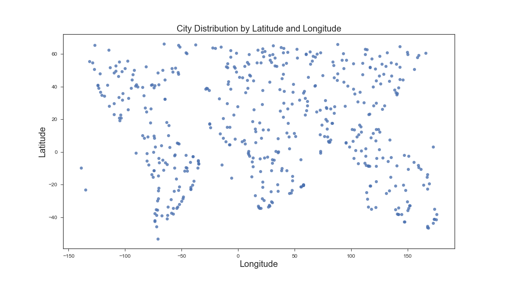

Analyses

Here we look at the weather in cities around the world: cloud cover, humidity, temperature and wind speed. You can click on any of the plots to the left to see a more detailed analysis of each dimension.
Methodology
Points were chosen at random with latitude values between -55 and 65 and longitude values between -140 and 189, to avoid unpopulated areas in the middle of the Pacific Ocean or at extremely high or low latitudes. Using a Citipy, a Python library, the nearest city and country code was identified for each random point.
Using the city names and country codes, calls were made to the Open Weather Map Current Weather Data API to retrieve the weather in that city at the time of execution.
Plots